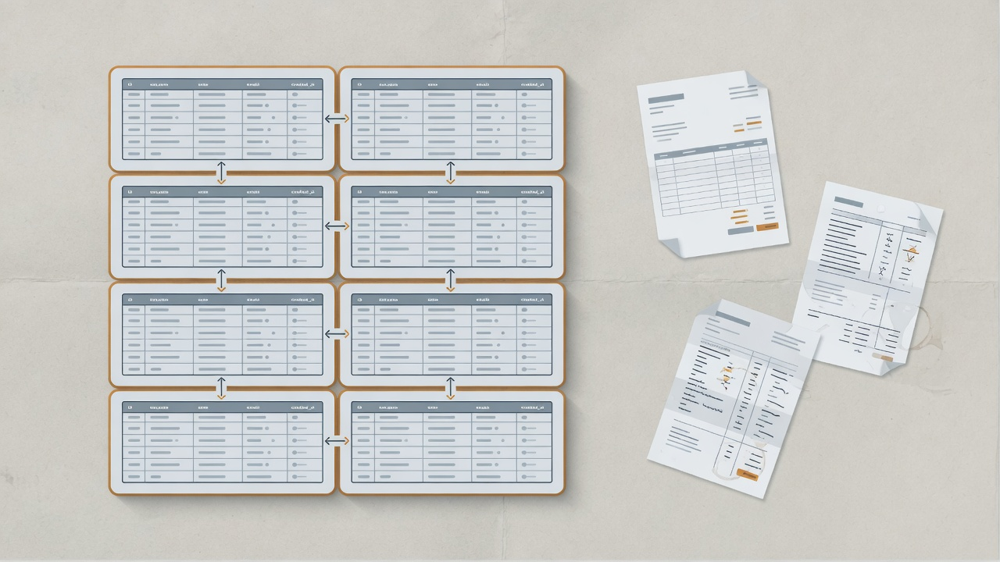

Platform engineering managers do not run out of good ideas. They run out of capacity to say yes to every reasonable request without wrecking the shared system. The skill is not blunt refusal. It is no with a path — specific enough that partners can actually execute, firm enough that your team is not a free consulting desk. Two nos from EDP work at LinkedIn taught me more than any generic prioritization framework.

Why platform “no” feels personal
Product and BI partners are graded on what ships this quarter. Platform teams are graded on leverage, reliability, and whether the company still has one coherent data model next year. So when you decline an unfunded migration or a rewrite dressed up as a preference, it can sound like you do not care. Sometimes that critique is fair. Often the real problem is that you said no without offering a way through. A villain blocks silently. A partner names the constraint and funds a path.
Principles I actually use
- Company throughput beats local speed. A one-week special case that creates a permanent support branch is not kindness.
- A delayed honest yes beats a fake yes. A Jira ticket with no staffing is a lie.
- Tradeoffs go in writing the same day. Memory is political; notes are kinder.
Everything below is those three principles in concrete form. If you cannot show how a decision shows up in ownership, metrics, and day-to-day work, it will not survive the next roadmap fight.
Case A — No to “just adopt the platform”
Request (implied): BI teams on Power BI and Tableau should move to EDP because it is the strategic GTM data platform. Reality: They could already get data from Hadoop-based pipelines. Migration looked like unfunded risk. And EDP could not become the source of truth without them. The no: No to a pure mandate without labor — “adopt EDP” as a favor to the platform team. The path:
- Executive sponsorship that framed legacy pipeline deprecation as continuity risk, not taste.
- EDP engineers assigned to migration work, not only documentation.
- Connectors into Power BI and Tableau.
- Query performance work so cutover did not punish adopters.
- Tooling, office hours, and hard deprecation milestones so dual-running actually ended.
That package is a no to magical adoption and a yes to an expensive but real interface change. Within a concentrated push — about a quarter for the BI motion we scoped — the migration stuck, and legacy surface area could shrink. Pattern: If the consumer has no incentive, your “no” is to unfunded asks; your “yes” is to change incentives and put a price on the work.
Case B — No to both pure extremes in an architecture fight
Request (implied): Pick monolith or microservices for an EDP self-serve portal — each side sure the other choice was malpractice. Reality: The disagreement went public, ownership collapsed, and delivery froze for roughly a month. The no: No to a binary holy war. No to indefinite debate. No to “loudest critique wins.” The path:
- Structured design review with written criteria (scalability, maintainability, speed, ownership).
- Time-boxed POCs from both approaches instead of slide wars.
- A neutral senior engineer in the room.
- Explicit coaching on ownership and influence in 1:1s — not only technical arbitration.
- A hybrid decision: core platform capabilities stayed integrated with the EDP backend; more dynamic portal workflows could be separate services; metadata lifecycle centralized (we used DataHub) rather than reinvented.
Execution resumed about a week after the decision landed. The portal itself took months, with real adoption along the way. Pattern: Sometimes the EM’s no is to false dichotomies. The funded path is a hybrid with proofs, not a victory lap for one camp.
Make yes expensive in the right way
Temporary exceptions will exist — dual pipelines during migration, transitional architecture branches. Price them:
- Time-bounded (a deprecation date, not vibes)
- Owned (a named team for breakage)
- Visible (on a list leadership can see)
- Removable (exit criteria written down)
Free, quiet exceptions are how platforms drown.
Roadmaps are how you say no at scale
One-off negotiation does not survive GTM scope. The EDP sales/GTM program needed an explicit sequence:
- Buy-in and prioritization
- MVP on high-value sales datasets
- Expand across sales/revenue consumers
- Broader GTM standardization
- Governance and optimization
That roadmap is a machine for “not yet.” Without it, every dataset is an emergency, and every emergency becomes a yes.
Protect the team without hiding behind them
“The team is busy” is weak if you cannot show the math. Better:
- Here is committed platform work (migration staffing, deprecation, portal seams).
- Here is what we will not staff this quarter.
- Here is the escalation if the business wants to reorder.
Take heat in partner forums so individual engineers are not negotiating company priority alone.
Closing
Saying no as a platform EM is stewardship of shared constraints. On EDP, the nos that mattered were: no unfunded adoption, and no architecture theater that freezes delivery. The yeses were expensive on purpose — engineers on migration, connectors, deprecation, POCs, hybrid seams. If partners can see the path, you are not the villain. You are how the company keeps one platform instead of twelve.